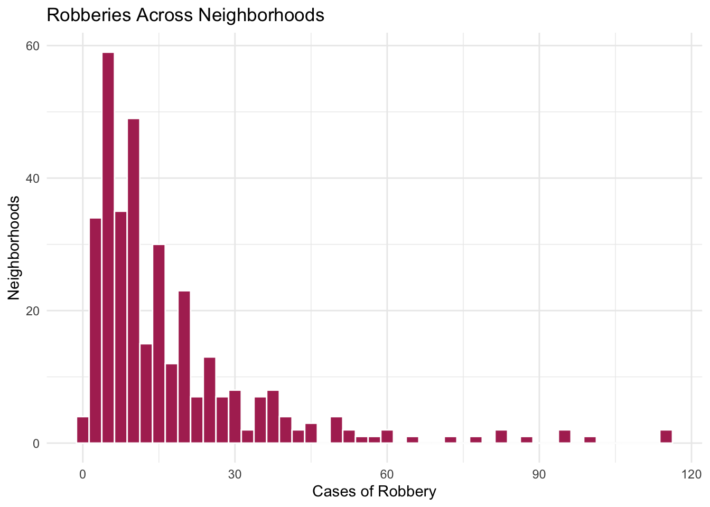
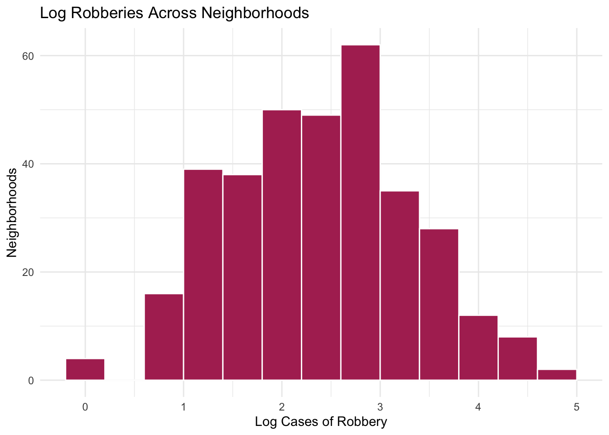

These data describe 343 neighborhoods in a major city observed over a 10 year period. It contains the following measures:
robbery: A count of the number of robberies occurring in the neighborhood within the 10 year study period. Units are individual robbery incidents.
disadvantage: An index of concentrated disadvantage (e.g., unemployment, poverty). Units are standard deviations and higher values indicate higher disadvantage. e.g., a neighborhood with disadvantage equal to 1 is 1 standard deviation higher in disadvantage than a neighborhood with disadvantage equal to 0.
instability: An index of residential instability (e.g., home ownership, recent moves). Units are standard deviations and higher values indicate higher instability.
heterogeneity: An index of ethnic heterogeneity (e.g., percent foreign-born, ethnic diversity). Units are standard deviations and higher values indicate higher heterogeneity
control: An index of informal social control capacity. Units are standard deviations and higher values indicate higher social control.
opportunity: A three-level ordinal variable capturing the density of features of the built environment that provide criminal opportunities (e.g., abandoned buildings, street lighting, commercial destinations).
── Conflicts ────────────────────────────────────────── tidyverse_conflicts() ──
✖ dplyr::filter() masks stats::filter()
✖ dplyr::lag() masks stats::lag()
ℹ Use the conflicted package (<http://conflicted.r-lib.org/>) to force all conflicts to become errors
library(janitor)
Attaching package: 'janitor'
The following objects are masked from 'package:stats':
chisq.test, fisher.test
library(flextable)
Attaching package: 'flextable'
The following object is masked from 'package:purrr':
compose
Rows: 343 Columns: 6
── Column specification ────────────────────────────────────────────────────────
Delimiter: ","
chr (1): opportunity
dbl (5): disadvantage, instability, heterogeneity, control, robbery
ℹ Use `spec()` to retrieve the full column specification for this data.
ℹ Specify the column types or set `show_col_types = FALSE` to quiet this message.
Calculate the correlation between robbery and control, then calculate the correlation between robbery and disadvantage. In a single sentence of plain language, explain what these values mean.
# Correlation, robbery and controlcor(neighb_crime$robbery, neighb_crime$control)
[1] -0.5761815
# Correlation, robbery and disadvantagecor(neighb_crime$robbery, neighb_crime$disadvantage)
[1] 0.441253
Answer: Neighborhoods with higher levels of informal social control tend to have fewer robberies (correlation is -0.58). Neighborhoods with higher levels of disadvantage tend to have more robberies (correlation is 0.44).
Linear Model
Estimates
Estimate a linear model where robbery is predicted by control, opportunity, disadvantage, instability, and heterogeneity. Show the summary output here too—you’ll want it for the next question.
# Run a linear model where robbery is predicted by control, opportunity, disadvantage, instability, and heterogeneitylm(robbery ~ control + opportunity + disadvantage + instability + heterogeneity,data = neighb_crime) |>coef()
Write out the full regression equation from this model (e.g., \(y = 2 + 3.5*x\)). For brevity, you can round the coefficients to 2 decimal places and abbreviate words, as long as it is still clear.
Based on this model, how many robberies would we expect to see in a neighbourhood with “high” opportunity, control at -1, disadvantage at 1, and both heterogeneity and instability at 0.
# Predicting robbery based on levels of opportunity, control, disadvantage, heterogeneity, and instabilitypredict(neigh_crime_lm, newdata =data.frame(opportunity ="high",control =-1,disadvantage =1,heterogeneity =0,instability =0))
1
42.79116
Answer: I would expect to see 43 robberies in a neighbourhood with “high” opportunity, control at -1, disadvantage at 1, and both heterogeneity and instability at 0.
R-squared
In 1 or 2 sentences, what is the \(R^2\) value for this model and how would you interpret it?
Answer: Around 57% of the variance in the number of robberies is explained by our model.
Interpretation
In 1 or 2 sentences each, how would you interpret (1) the coefficient for instability and (2) the coefficient for “low” opportunity? Include their statistical significance in your interpretation.
Answer:
(1) For every one unit increase in instability there will be around 0.86 fewer robberies, holding all else constant, but the effect is not significant (p = 0.22).
(2) Neighborhoods with low opportunity will have around 23 fewer robberies than high opportunity neighborhoods, holding all else constant, and the effect is very statistically significant (p <0.001).
Histograms
Create a histogram or density plot of the robbery variable. What do you notice about this variable?
# Create a historgram for robberies across neighborhoods, with robbery counts on the x-axis and neighborhoods on the y-axisggplot(neighb_crime,aes(x = robbery)) +geom_histogram(binwidth =2.5, fill ="maroon", color ="white") +labs(title ="Robberies Across Neighborhoods", x ="Cases of Robbery", y ="Neighborhoods") +theme_minimal()

Answer: Robbery is skewed to the right. Most neighborhoods have only a small number of robberies, while a smaller number of neighborhoods have a very large number of robberies.
Next, repeat your histogram or density plot but use the log of the robbery variable. How does this compare to the prior plot?
# Create a histogram using the log of the robbery variablerobbery_log <-log(neighb_crime$robbery)ggplot(neighb_crime,aes(x = robbery_log)) +geom_histogram(binwidth =0.4, fill ="maroon", color ="white") +labs(title ="Log Robberies Across Neighborhoods", x ="Log Cases of Robbery", y ="Neighborhoods") +theme_minimal()

Answer: This histogram looks closer to normal distribution.
Moderate Problems
DAG to model
Consider the DAG below that depicts a model of social disorganization theory with criminal opportunity added.
Compare your linear model from question 1.2 to the DAG. Based on the statistical significance of the coefficients, do our model results agree with the theory in the DAG? That is, do we find evidence that all the paths on the DAG that lead into robbery exist? Why or why not?
Answer: Based on the statistical significance of the coefficients, it seems that the results from our model agrees with the theory in the DAG for control and opportunity since they are both statistically significant. Disadvantage is also supported but not as strongly. Instability and heterogeneity are not supported because their coefficients are not statistically significant.
Log-level Model
We might consider using the log of robbery as our outcome instead. Rewrite the linear model from 1.2 to predict the log of robbery using the other covariates. Is it possible to use anova() to compare this new log-level model to the previous linear one?
# Run a linear model where the log of robbery is predicted by control, opportunity, disadvantage, instability, and heterogeneitylm(robbery_log ~ control + opportunity + disadvantage + instability + heterogeneity,data = neighb_crime) |>coef()
Answer: We cannot use anova() to compare this new log-level model to the previous linear one because the new log-level model is not nested.
Quadratic term
A substantial literature in community criminology suggests disadvantage has a non-linear effect on crime: Once disadvantage gets relatively high, further disadvantage doesn’t contribute much to crime. Add a quadratic polynomial functional form of disadvantage to your model from 2.2 (or 1.2 if you didn’t know how to do 2.2).
# Run a linear model where the log of robbery is predicted by control, opportunity, disadvantage (in quadtratic polynomial functional form), instability, and heterogeneityneigh_crime_lm_log2 <-lm(robbery_log ~ control + opportunity + disadvantage +I(disadvantage^2) + instability + heterogeneity,data = neighb_crime)neigh_crime_lm_log2 |>coef()
Evaluate whether there is statistical evidence that you should use the quadratic functional form of disadvantage instead of the linear term alone (i.e., does it fit better than it did before?).
# Compare models using ANOVAanova(neigh_crime_lm_log, neigh_crime_lm_log2)
Analysis of Variance Table
Model 1: robbery_log ~ control + opportunity + disadvantage + instability +
heterogeneity
Model 2: robbery_log ~ control + opportunity + disadvantage + I(disadvantage^2) +
instability + heterogeneity
Res.Df RSS Df Sum of Sq F Pr(>F)
1 336 72.806
2 335 68.411 1 4.3946 21.52 5.03e-06 ***
---
Signif. codes: 0 '***' 0.001 '**' 0.01 '*' 0.05 '.' 0.1 ' ' 1
Answer: There is statistical evidence that we should use the quadratic functional form of disadvantage instead of the linear term alone because the RSS (residual sum of squares) decreases (72.8 to 68.4) and the p value is very low and statistically significant (p < 0.001).
Harder Problems
Interaction plot
Create a scatterplot with control on the x-axis and the log of robbery on the y-axis. Include different coloured regression lines for each level of opportunity. In a sentence or two, what do you see in this plot?
Answer: The results are interesting because control matters at all levels of opportunity, but because the slopes of the lines are different, control matters differently at different opportunity levels. For example, at a high opportunity are, since the slope is the most flat of the three opportunity levels, robberies would not be reduced as much is you were to increase control (compared to low or medium opportunity areas).
Interaction Model
Based on the plots from 3.1, we might expect there is an interaction between control and opportunity. That is, we think the effect of control on robbery might be different at different levels of opportunity. Take your linear model from 2.3—with the logged outcome and quadratic disadvantage—and add an interaction between control and opportunity.
# Run a linear model where the log of robbery is predicted by the interaction between control and opportunity, disadvantage (in quadtratic polynomial functional form), instability, and heterogeneityneigh_crime_lm_interaction <-lm(robbery_log ~ control * opportunity + disadvantage +I(disadvantage^2) + instability + heterogeneity,data = neighb_crime)neigh_crime_lm_interaction |>coef()
Does the model with the interaction term fit better than the one without? Use a statistical test to compare them and interpret the results of the test.
# Compare models using ANOVAanova(neigh_crime_lm_log, neigh_crime_lm_log2, neigh_crime_lm_interaction)
Analysis of Variance Table
Model 1: robbery_log ~ control + opportunity + disadvantage + instability +
heterogeneity
Model 2: robbery_log ~ control + opportunity + disadvantage + I(disadvantage^2) +
instability + heterogeneity
Model 3: robbery_log ~ control * opportunity + disadvantage + I(disadvantage^2) +
instability + heterogeneity
Res.Df RSS Df Sum of Sq F Pr(>F)
1 336 72.806
2 335 68.411 1 4.3946 23.02 2.424e-06 ***
3 333 63.570 2 4.8411 12.68 4.931e-06 ***
---
Signif. codes: 0 '***' 0.001 '**' 0.01 '*' 0.05 '.' 0.1 ' ' 1
Answer: There is statistical evidence that the model with the interaction term fits better than the one without it because the RSS (residual sum of squares) decreases (68.4 to 63.6) and the p value is even lower and statistically significant (p < 0.001).
Interpretation
This is a complex model—it has a logged outcome and an interaction. Rather than interpreting the coefficients numerically, explain them intuitively. Specifically, at what level of opportunity does control have the strongest association with the log of robbery, and at what level of opportunity does control have the weakest association with the log of robbery?
Answer:Control has the strongest association with the log of robbery in neighborhoods with low opportunity. The direction of the effect is negative, meaning that increasing control will reduce robbery, especially in neighborhoods with low opportunity.Control has the weakest association with the log of robbery in neighborhoods with high opportunity, and the direction of the effect is also negative, meaning that increasing control will reduce robbery though to a lesser degree than in neighborhoods with low or medium opportunity.